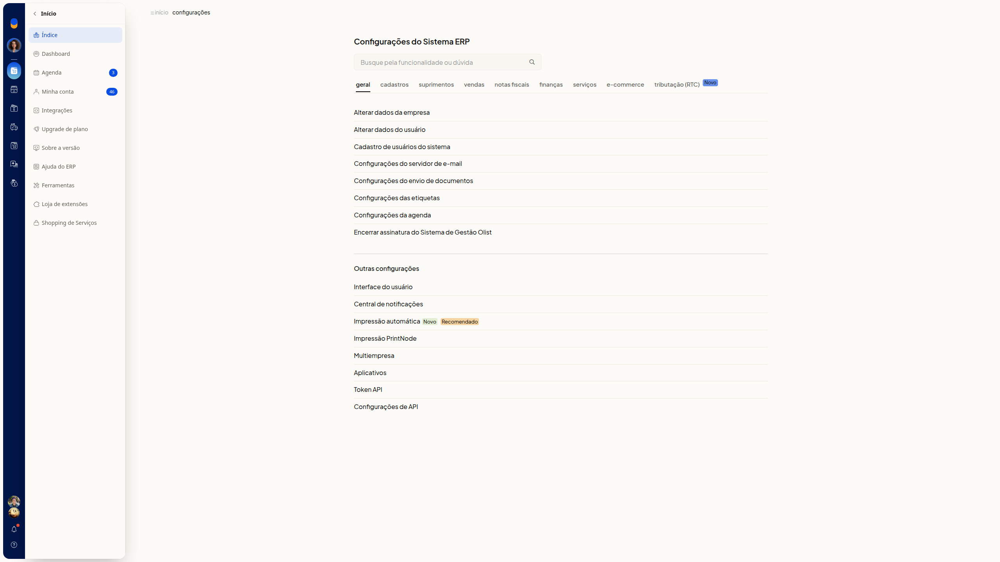
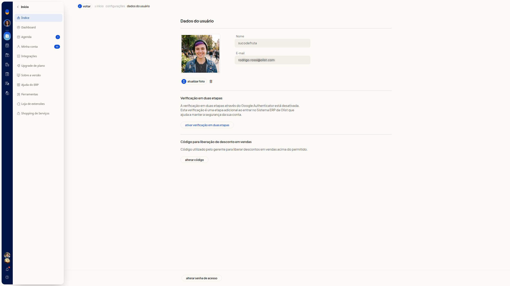
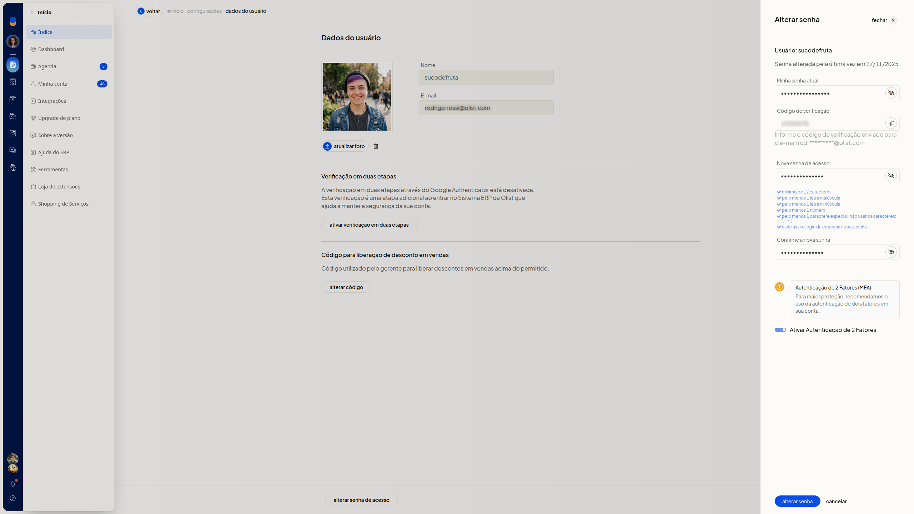
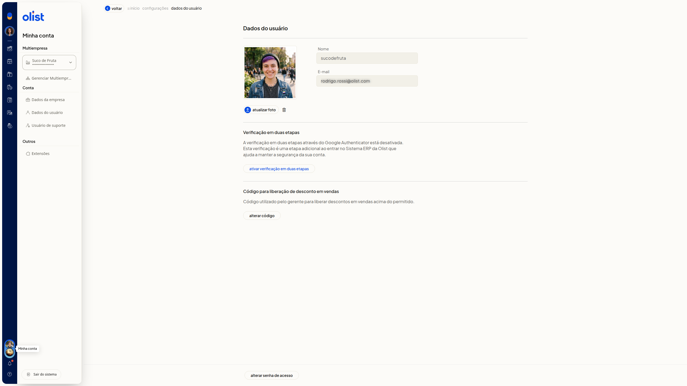

Alterar senha e sair do sistema
No ERP da Olist, você altera a senha de acesso da sua conta e confirma a troca com o código enviado ao email. Pelo painel Minha conta, você também sai do sistema.
A tela Dados do usuário reúne a troca de senha. Você a abre em Configurações > Configurações ERP > Geral > Alterar dados do usuário ou pelo avatar, em Minha conta > Dados do usuário.
Importante
- Tenha a senha atual da conta. A troca pede essa senha e o código de verificação enviado ao email da conta.
- A nova senha precisa ter entre 12 e 32 caracteres, com letra maiúscula, minúscula, número e caractere especial.
- Não use os caracteres = " ': e não use a senha de login da empresa.
Instruções
Alterar a senha de acesso
-
Acesse Configurações > Configurações ERP.
-
Na área Geral, clique em Alterar dados do usuário.


-
Clique em Alterar senha de acesso.

-
Digite a senha atual em Minha senha atual.
-
Digite o código em Código de verificação. O código é enviado ao email da conta. Para reenviar, clique em Re-enviar código.
-
Digite a nova senha em Nova senha de acesso e repita em Confirme a nova senha.
-
Revise Ativar Autenticação de 2 Fatores. A opção só é enviada com Alterar senha.

-
Clique em Alterar senha para concluir a troca.
Sair do sistema
-
Clique no avatar no topo da tela.

-
Clique em Sair do sistema.
Informações adicionais
- O formulário de troca de senha exibe a data da última alteração de senha.
- Cancelar fecha o formulário e volta para Dados do usuário.